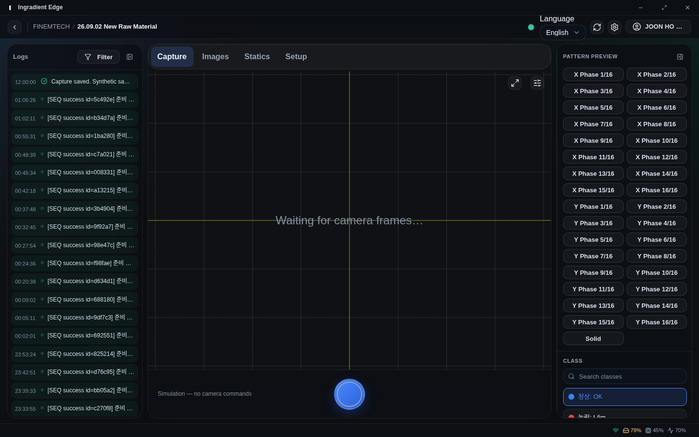
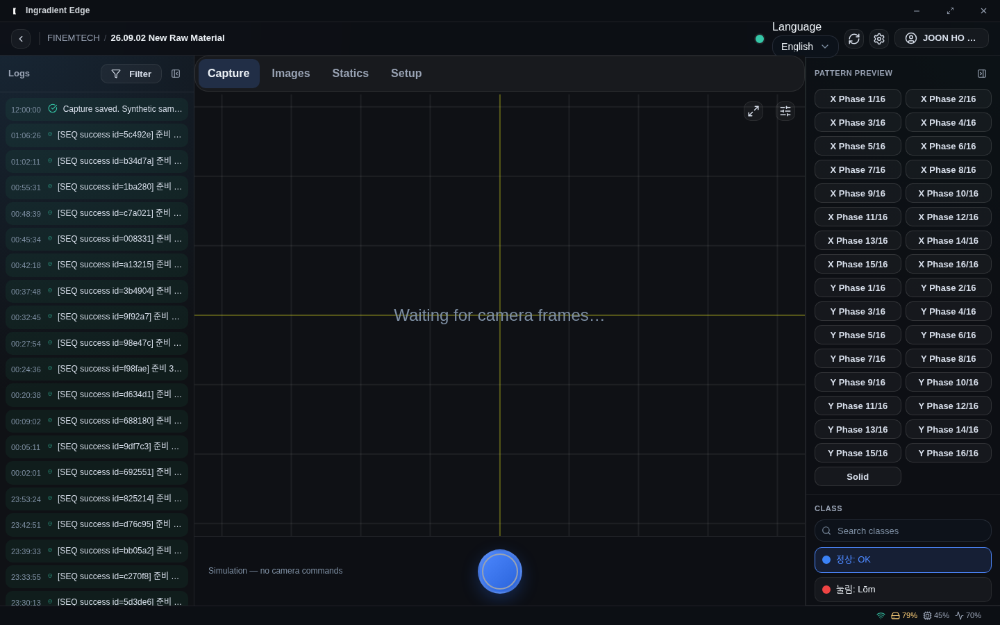
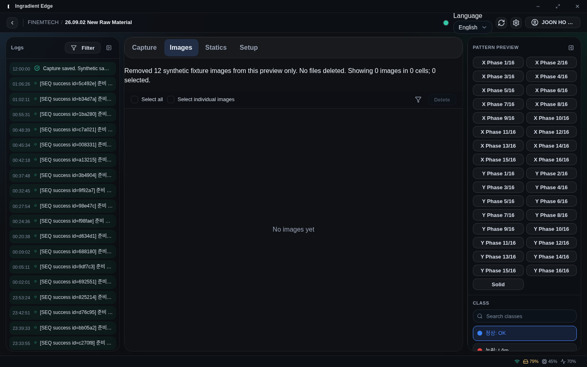
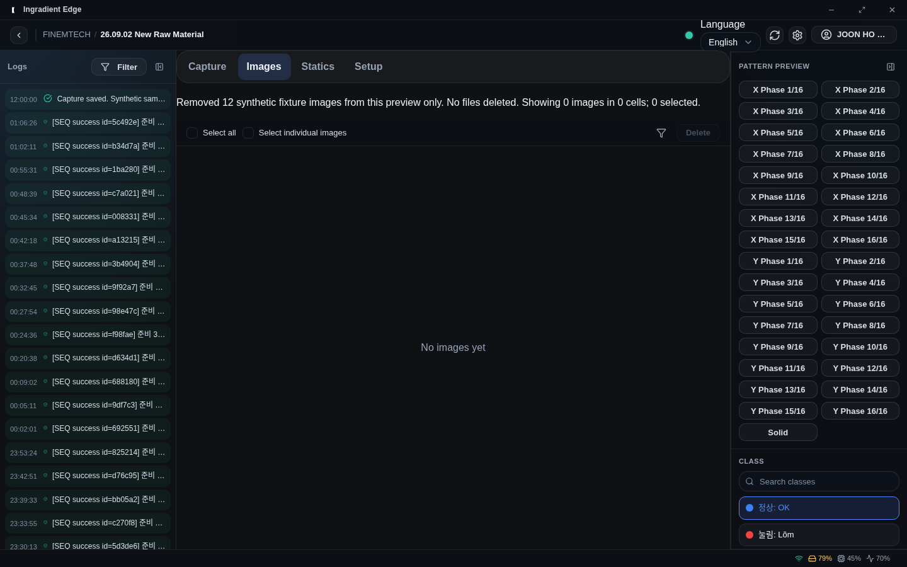
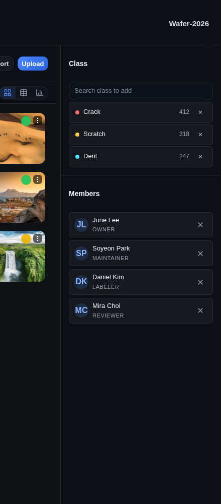
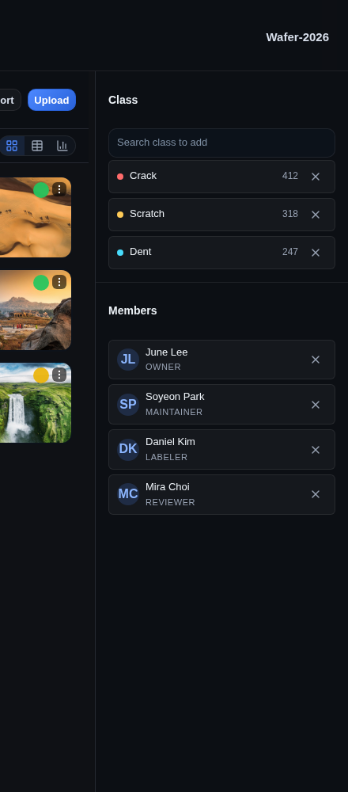
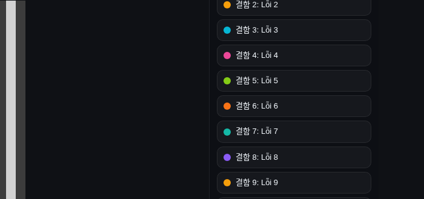

2026-10-17 간격·일관성 점검과 결정 사항
작성 2026-10-18 · 브랜치 refactor/space-props-and-removable-list · push/PR 전. 다른 분과 논의할 결정 항목과 근거를 한곳에 모았다. 링크의 Storybook 서버는 Omarchy에서 임시로 열어 둔 것이라 서버가 내려가면 열리지 않는다(아래 §7 참고).
요약
| # | 결정할 것 | 제 의견 | 필요한 확인 |
|---|---|---|---|
| 1 | 간격 스케일을 4px 단위로 바꿀지, 방향은 | 4px 그리드는 맞다. 일괄 반올림은 비추천, 용도별(gap은 올림, 밀도를 줄일 곳은 내림) | 두 시험 빌드에서 Create Project·Dashboard 비교 |
| 2 | Edge 최상위 영역을 Platform처럼 선으로 나눌지 | 방향은 좋다. 시험안은 미완성(탭 막대, 안쪽 목록) | Edge 카드가 Figma 기준인지, 시각 기준선 19장 재등록 비용 감수 여부 |
| 3 | 공용 SidebarShell의 < > 화살표를 패널 아이콘으로 통일할지 | 의미가 달라 이번에는 보류 | 내비게이션 폭 조절과 패널 접기를 같은 규칙으로 볼지 |
padding·margin·gap에 직접 쓴 px는 0건. 추정: 불규칙해 보이는 주된 원인이 스케일 설계(6·10·14·18·22px)라는 점.결정 1 — 4px 그리드
사실
- 현재 스케일은 4·5·6·7·8·10·12·14·16·18·20·22·24·28·32px(
DESIGN.md, 2px 단위). 4의 배수 8개, 그리드 밖 7개. - 컨트롤 높이(24/28/32/40px)는 이미 4의 배수 → 컨트롤은 그리드 안, 그 사이 간격이 밖이다.
- 사용 횟수: 8px(
space-3) 338, 10px 246, 6px 227, 12px 192, 16px 162. 간격 선언 중 그리드 밖 토큰은 408건.
시험 결과 (토큰 값 8줄만 바꾼 별도 빌드, 이름·사용처 그대로)
| 화면 | 기준 높이 → 내림 / 올림 |
|---|---|
| Create Project | 1080 → 1028 (−52) / 1132 (+52) |
| Dashboard | 3498 → 3430 (−68) / 3588 (+90) |
| Catalog·Class·Settings·Edge | 뷰포트 고정 화면이라 높이 변화 없음(내부 배치만 이동) |
같은 빌드끼리 비교한 대조군 0.0%, 애니메이션 끔·폰트 로드 후 1440×900 캡처. 내림: 5·6·7→4, 10→8, 14→12, 18→16, 22→20, 3px→2. 올림: 5·6·7→8, 10→12, 14→16, 18→20, 22→24, 3px→4.
기준 · 내림 · 올림 (Create Project) | 기준 · 내림 · 올림 (Dashboard)
안 비교
| 안 | 구성 | 장점 | 단점 |
|---|---|---|---|
| A 엄격한 4px(추천) | 0, 2(micro), 4, 8, 12, 16, 20, 24, 32… | 규칙이 단순, 린트로 강제 가능 | 6·10px 사용처 판단 필요 |
| B 4px + 6px 예외 | A에 6px 추가 | 조밀한 화면 변화 적음 | 규칙이 흐려지고 예외가 늘기 쉬움 |
| C 8px 그리드 | 4, 8, 16, 24, 32 | 가장 단순 | 28px 컨트롤과 충돌, 조밀한 UI에 거침(비추천) |
4부터 시작할지 / 큰 값에서 8배수로 바꿀지: 1px은 간격이 아닌 테두리, 2px는 광학 보정용 micro 토큰 하나, 3·5·7px는 사용이 20회 미만이라 제거. 큰 값은 32→40→48처럼 8px 단위로 넘어가는 것을 권한다(큰 값에서 4px 차이는 보이지 않음).
결정해 주세요
- 안 A·B·C 중 무엇으로 갈지.
- 6px·10px를 용도별로 어디로 보낼지(요소 사이 gap은 큰 쪽, 조밀하게 줄일 곳은 작은 쪽).
- 토큰 이름을 px 값으로 바꿀지(
space-3=8px 같은 혼란 제거, 영향 큼).
결정 2 — Edge 영역 구분: 카드 vs 선
사실
- Platform: 면 전체가 하나의 캔버스이고 1px 선으로 열을 나눈다. Edge: 세 영역이 둥근 테두리 카드(반경 20px)로 떠 있고 카드 사이 약 12px 간격 + 바깥 여백.
- 카드 스타일은
MainLayoutView.styles.ts의Panel한 곳에서 정해진다. - Edge 카드가 Figma 기준인지 코드·문서에서 근거를 찾지 못했다.
시험 결과 (패널 투명·테두리/모서리/그림자 제거·패널 사이 간격 0, 소스는 복원)
- 패널 높이 772→792px(+20), 가로 스크롤 없음, 설정 모달은 변화 없음(떠 있는 요소라 카드가 맞음).
- 미완성: 가운데 탭 막대(Capture/Images/Statics/Setup)가 둥근 상자로 남아 혼자 떠 보임. 로그 항목·패턴 버튼은 개별 카드 모양 그대로.




현재 Capture · 선 방식 Capture · 현재 Images · 선 방식 Images
비용·위험
- Edge 0.0.5 시각 기준선 19장이 모두 바뀐다 → CI(Ubuntu) 캡처로 새 기준선 승인 절차를 다시 해야 한다.
- 그라데이션 배경은 카드가 있어야 의미가 있어 같이 정리해야 한다.
- 정식 적용은 별도 브랜치에서 하는 것을 권한다.
결정해 주세요
- Edge 카드 모양은 Figma에서 온 것인가, 구현하다 생긴 것인가? (Figma 기준이면 디자인 변경 확인 필요)
- 안쪽 목록 항목(로그, 패턴 버튼)도 같이 가볍게 할지.
- 기준선 19장 재등록 비용을 감수할 만한 가치가 있는지.
결정 3 — SidebarShell 화살표
공용 SidebarShell(앱 내비게이션 사이드바)은 자체 SVG < >를 쓴다. "패널 접기"가 아니라 내비게이션 폭 조절이라 의미가 다를 수 있고, 외부에 공개되는 컴포넌트라 이번 커밋에서 건드리지 않았다. 같은 규칙(PanelLeft/Right Close·Open)으로 통일할지 결정이 필요하다.
이미 끝낸 것 — 3개 커밋 (push 전)
| 커밋 | 내용 | 확인한 것 |
|---|---|---|
28e7fce | SwatchItemList·IdentityItemList → RemovableItemList 통합 | Class 목록이 6px 간격 + SVG 삭제 아이콘으로 바뀜(스크린샷의 어긋남 해소). 구조 정리 빌드(아이콘 변경 전)를 기준 빌드와 전체 스토리 888개로 비교했을 때 반복 측정에서 일관되게 다른 화면은 이 두 목록 스토리(swatchitemlist, sidepanellayout)였다. 아이콘 변경 이후 빌드는 전체 비교를 다시 하지 않았다. |
485ca15 | Stack·Inline·Grid·Box의 gap·padding이 토큰 문자열만 받음 (122곳 값 보존 변환) | gap={3}이 3px인데 GridContainer의 같은 prop은 8px였던 혼란 제거. 화면 값 불변. |
9bb1ba8 | 패널 접기·펼치기 아이콘 통일, Edge 스토리의 임시 텍스트 버튼 삭제 | Platform 4곳·Edge 우측 패널 접기→펼치기를 브라우저에서 직접 확인. 15px로 찌그러진 버튼 해소. |




검증: 유닛 464개·린트 에러 0·tsc 0·style-literals·doc-coverage 통과, 세 커밋 각각 단독으로 tsc 0. 아직 안 한 것: CI의 Storybook 브라우저 테스트와 visual 스냅샷(PR을 올려야 확인됨).
처음 만든 커밋은 아이콘 hunk 분리 중 gap 변환 한 줄이 빠져 앞 두 커밋이 단독으로는 타입 검사에 실패했다. push 전 로컬 커밋 3개만 순서를 바꿔 다시 만들었고(최종 내용 동일), 백업 브랜치 backup/space-props-before-resplit이 남아 있다.
CI 효율 (보류 — 다시 말씀하시면 진행)
최근 성공한 PR 실행 하나(약 10분)의 단계별 시간: test-storybook 363초, npm test 96초, build:storybook 50초, test:visual 48초. 구조상 낭비: 단일 job 순차 실행, ci.yml에 concurrency 없음, paths 필터 없음, CI·Deploy·publish에서 같은 검사 반복. 제안(미적용): job 분리 병렬화, PR cancel-in-progress, 문서만 바뀐 PR 제외, Storybook 테스트 샤딩(가설, 측정 필요). 접근성 확대는 컴포넌트가 굳은 뒤 일괄로 하기로 해 보류했다.
링크·서버·재현 방법
| 포트 | 내용 |
|---|---|
| 6031 | 기준(커밋 6c54603 빌드) |
| 6032 | 4px 그리드 시험 — 내림 |
| 6033 | 4px 그리드 시험 — 올림 |
| 6034 | 현재 브랜치(3커밋 포함) |
| 6035 | Edge 영역을 선으로 나눈 시험 |
| 6030 | 이 리포트들 |
- 이전 리포트: 간격 토큰 위계 점검(위치별 링크) · 4px 그리드 시험 적용(화면별 전후 캡처)
- 분석 스크립트:
assets/2026-10-17-spacing-trial/tools/(scan.mjs간격 추출,agg.mjs집계,build.mjs리포트 생성). 경로가 이 머신에 맞춰져 있다. - 서버가 내려갔을 때 다시 열기: 시험 빌드는
/tmp에 있어 재부팅하면 사라진다. 그때는 토큰 값(src/tokens/core/spacing.ts8줄) 또는MainLayoutView.styles.ts의Panel을 수정해npx storybook build -o <폴더>로 다시 만들어야 한다. 위 §1·§2의 변경 내용이 그대로 재현 방법이다. - 한계: 간격 스캔은
padding·margin·gap과 JSX 숫자 prop만 본다(top·left·width, 중첩calc()제외). 브라우저 측정은 일부 화면만 했다.